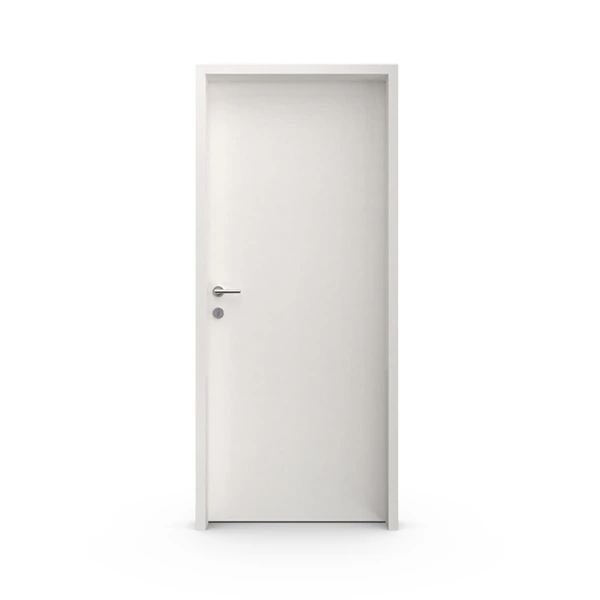
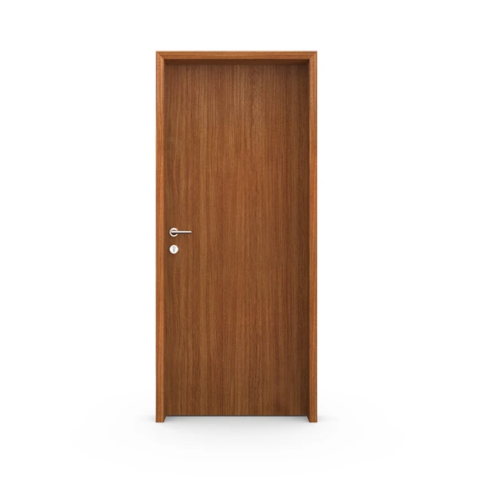
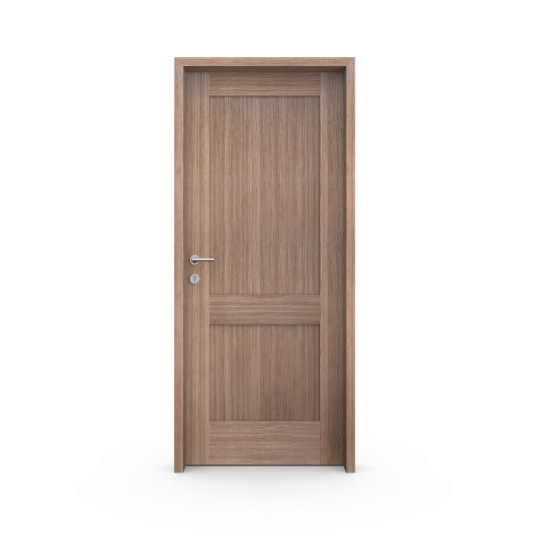
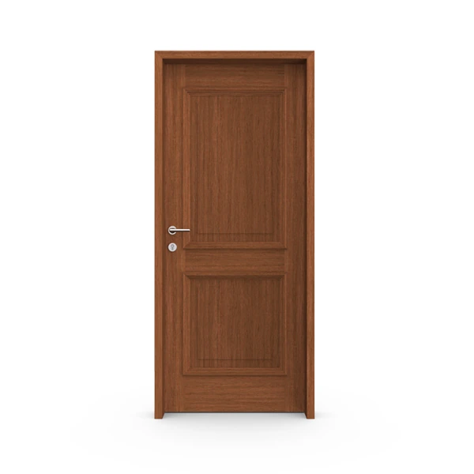
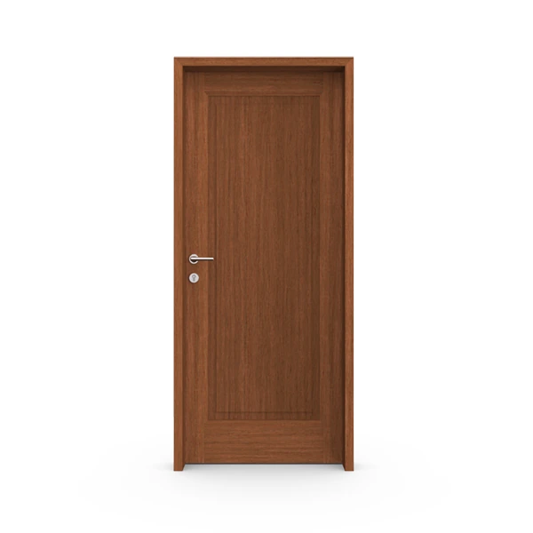

Elegí cómo se abre
tu espacio.
Ocho líneas, distintas formas de expresar la madera. Encontrá el diseño que acompaña tu forma de habitar.

Placa pintada
La simpleza de una superficie lisa, con terminación pintada en blanco.

Placa foliada
Superficies lisas con foliados en roble, nogal o blanco.

Placa enchapada
La veta como protagonista. Superficies lisas con enchapados de madera natural o reconstituida.

Aldeana
Diseño de tableros con opciones en madera enchapada y blanco.

Toscana
Un diseño de tableros con opciones enchapadas y pintadas, en versiones de madera o vidrio.

Sardegna
Un diseño de tableros con presencia, en nogal oscuro, nogal claro o blanco.

Avignon
Tableros de proporciones clásicas, con versiones en madera o vidrio.

Burdeos
Tableros definidos, con opciones en nogal macizo y terminaciones pintadas.
Diseño, terminación y marco.
Tres decisiones que se complementan.
La línea define la forma de la puerta. La terminación aporta textura y color. El marco resuelve su encuentro con la pared.
Conocé qué tener en cuenta